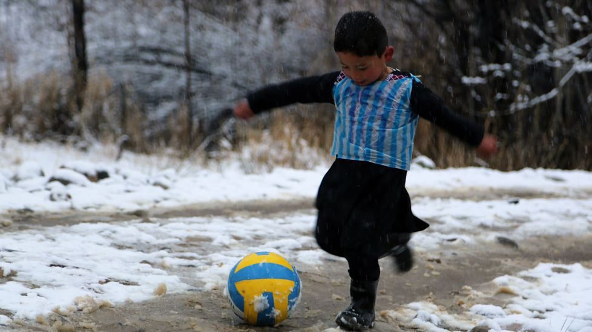

internacional
internacional 
El pequeño Murtaza, un niño afgano de 5 años que desde hace días arrasa en las redes sociales tras hacerse virales unas fotos en las que viste una camiseta de Messi hecha con una bolsa de plástico, por fin va a conocer a su ídolo.
"La dirección de la Federación Afgana de Fútbol (AFF) ha recibido correos electrónicos de Lionel Messi y del FC Barcelona en relación al encuentro", informó h el portavoz de la AFF, Syed Ali Kazemi.
El portavoz confirmó que la cita ya está organizada, por lo que el pequeño, residente en una aldea remota de la provincia de Ghazni, una región del sur del país golpeada por el conflicto, pronto verá su sueño hecho realidad.
Las imágenes de Murtaza ataviado con una bolsa plástica de rayas verticales azules y blancas con el nombre de Messi y el número 10 escrito a bolígrafo, emulando el dorsal de su ídolo en la selección argentina, han dado la vuelta al mundo durante las últimas semanas.
Si bien todavía no habla de forma fluida, el niño acertó a explicar por vía telefónica lo mucho que le gusta "Meshi" y cuánto desea "conocerle y jugar" con él.
Murtaza, perteneciente a la minoría étnica hazara (de origen mongol), llevaba tiempo pidiendo a su familia una camiseta del argentino, pero en su remoto lugar de residencia no es posible conseguir tal artículo, indicó a su padre, Ahmadi.
